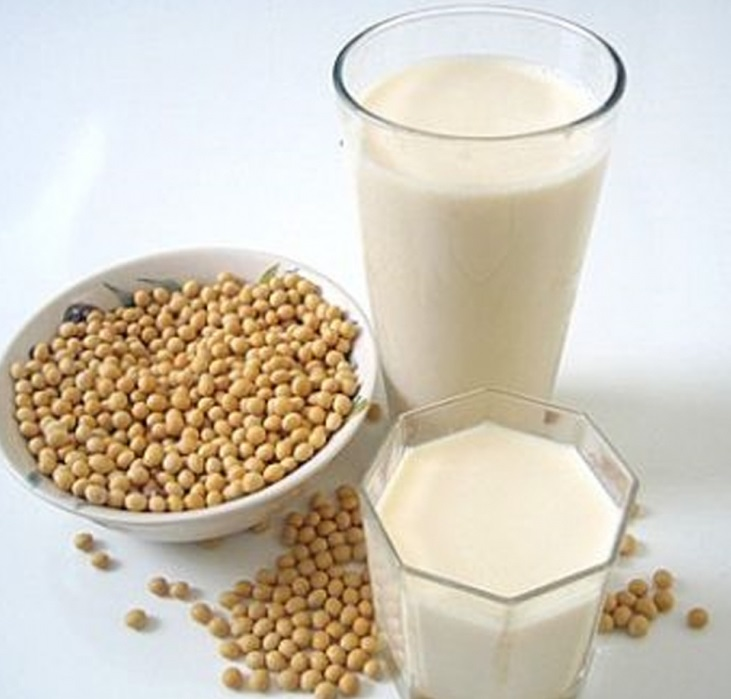
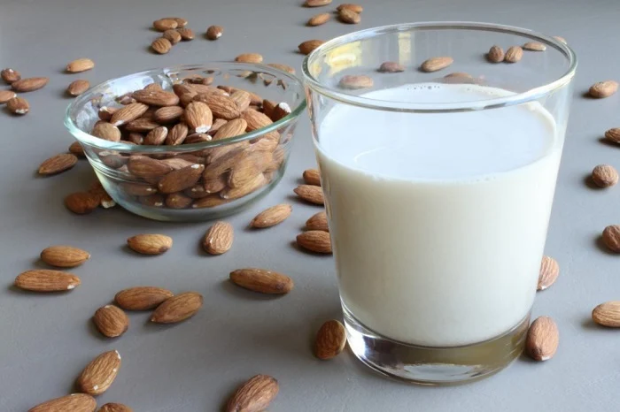
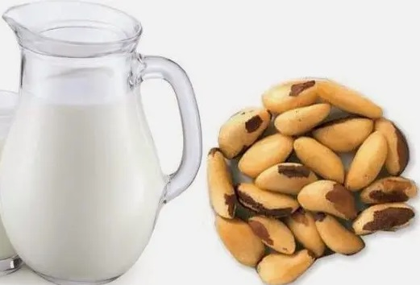
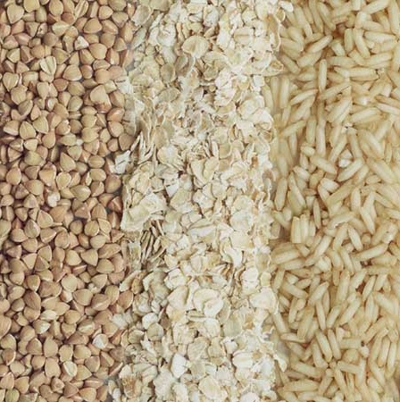
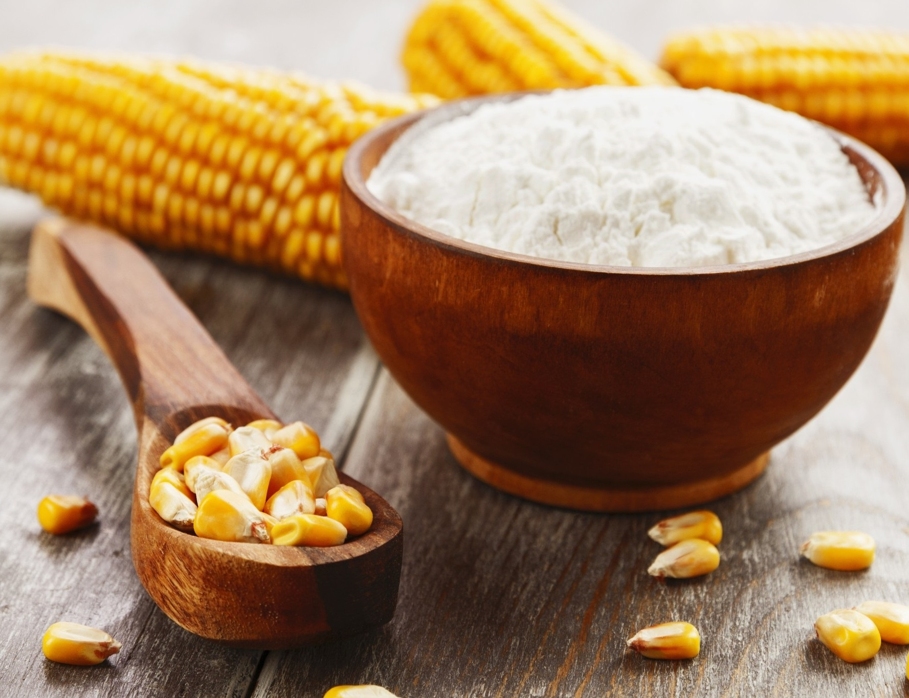
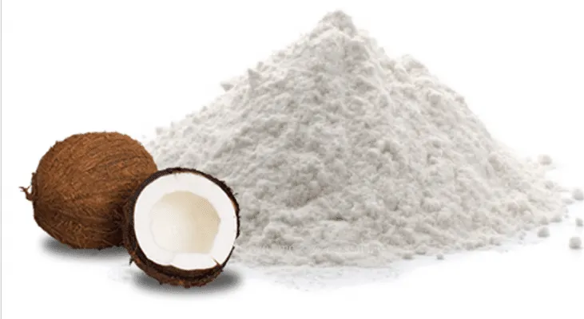

Alergia ou intolerância à lactose e ao glúten?
Muito se fala em alergia ou intolerância à lactose e ao glúten. No entanto, é importante saber a diferença entre essas duas situações.
A alergia ao leite e derivados na verdade é uma resposta exagerada do sistema imunológico a uma proteína específica do leite da vaca. Por outro lado, a intolerância à lactose dificuldade do corpo de processar a lactose. Isso geralmente se deve à quantidade insuficiente da enzima lactase no organismo.
Essa deficiência da enzima lactase pode ser causada por uma distúrbio congênito, quando a pessoa já nasce sem a capacidade de produzir lactase. Porém, o mais comum é que a intolerância se desenvolva por outros motivos. Entre eles, uma baixa produção de lactase devido à mudança de hábitos alimentares. Outro caso é quando há um processo inflamatório ou infeccioso nas células intestinais responsáveis por produzir tal enzima.
Outro fator importante analisar, que muitas as vezes o processo inflamatório se dá pelo consumo da farinha branca. Esse tipo de farinha, pode causar alergia em várias partes do corpo. A solução é procurar um profissional da saúde, descobrir a causa e fazer a troca da farinha branca por outro tipo de farinha.
-
Leite de soja
 -
Leite de amêndoas
 -
Leite de castanha do pará
 -
Leite de coco
-
Farinhas oleaginosas e sementes

-
Farinhas de grãos e cereais
 -
Amidos
 -
Farinha de coco
